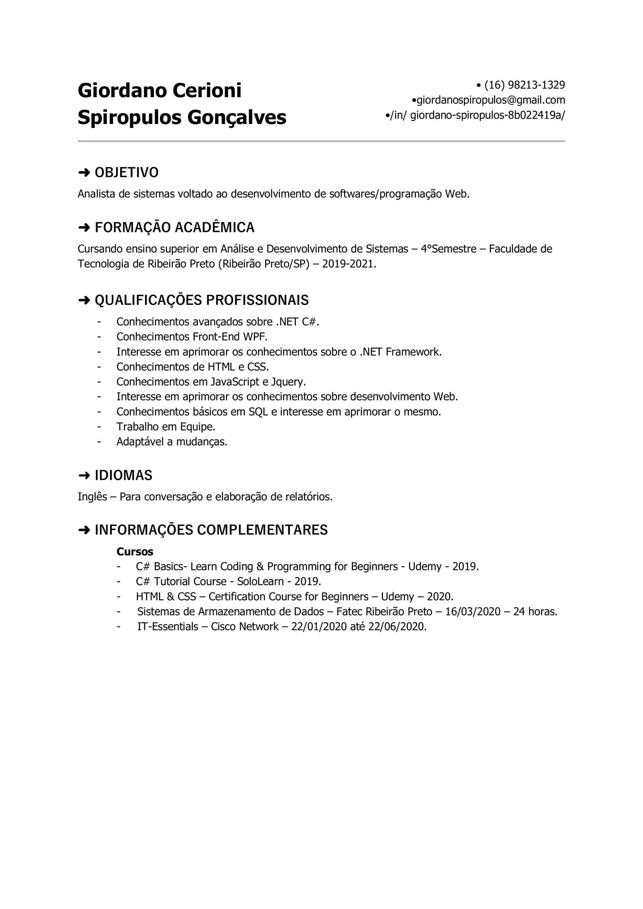

Sobre
Sou estudante de Análise e Desenvolvimento de Sistemas da Fatec Ribeirão Preto! Adoro programar Front-End e Back-End. Tenho interesses em adquirir experiência na área de programação, principalmente voltado a Web Devolopment e aplicações desktop.
Dados
- Nome: Giordano Cerioni Spiropulos Gonçalves.
- Cidade: Ribeirão Preto - São Paulo.
- Idade: 19 anos.
- Cursando: Analise e Desenvolvimento de Sistemas (Quarto Semestre).
- Interesse: Adquirir experiências na área de programação, especialmente voltado a web, e aprimorar outras habilidades que fazem parte do meu desenvolvimento pessoal. Desejo trabalhar também com pessoas que possuam uma pluralidade de ideias e visões.
Informação
Linguagens e Tecnologias
- Linguagens: C, C++, C# e WPF, JavaScript, JQuery, SQL, SQLite, Html, CSS e BootStrap 4.
- Conhecimentos: Sistema de Armazenamento de Dados, Manutenção de Computadores (IT-Essentials).
- Idioma: inglês avançado tanto para conversação quanto para escrita.
Cursos
- C# Basics - Learn Coding & Programming for Beginners - Udemy - 4 horas.
- C# Tutorial course - SoloLearn.
- HTML & CSS Certification Course for Beginners - Udemy - 4 horas.
- (Em Curso) The Complete Web Developer Masterclass: Beginner to Advanced - Udemy - 50 horas.
- Sistema de Armazenamento de Dados - Fatec-Rp - 24 horas.
- IT Essentials - Cisco - 80 horas
Currículo
Contatos
Contatos
- Email: giordanospiropulos@gmail.com
- Linkedin: https://www.linkedin.com/in/giordano-spiropulos-8b022419a/
- GitHub: https://github.com/GiordanoSpiropulos/
- Telefone: (16)98213-1329